ANO CRYSTAL · FOR YOU
慢慢挑，找到喜歡的水晶
先選一個喜歡的顏色，點照片看大圖；想多認識礦石，再進介紹頁。
從喜歡的顏色開始挑
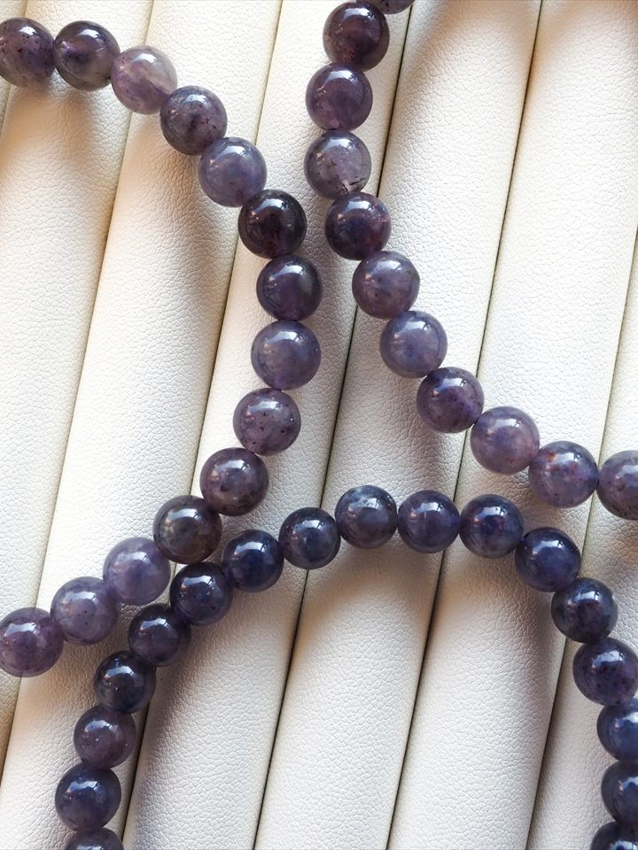
堇青石
10/26 新品 · 藍紫灰色調
看照片與款式資訊 ↗NT$430 起
7mm NT$430 · 8mm NT$480 · 9mm NT$590；手圍約 16cm（可改小）
藍裡帶一點紫灰，很像陰天快放晴時的天空。
堇青石 7mm 手串介紹 →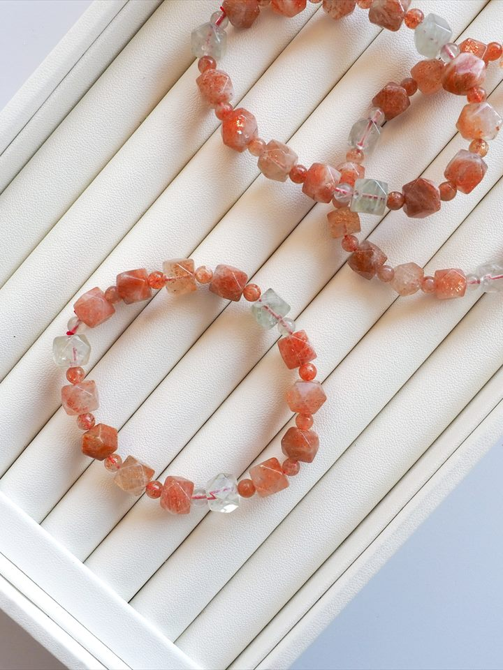
六角切面阿魯沙
10/26 新品 · 六角切面 · 閃耀
看照片與款式資訊 ↗NT$450 起
7mm NT$450 · 8mm NT$580 · 9mm NT$680；手圍約 16cm（可改小）
切面一轉就會一直閃，像光被切成一小片一小片。
六角切面阿魯沙手串介紹 →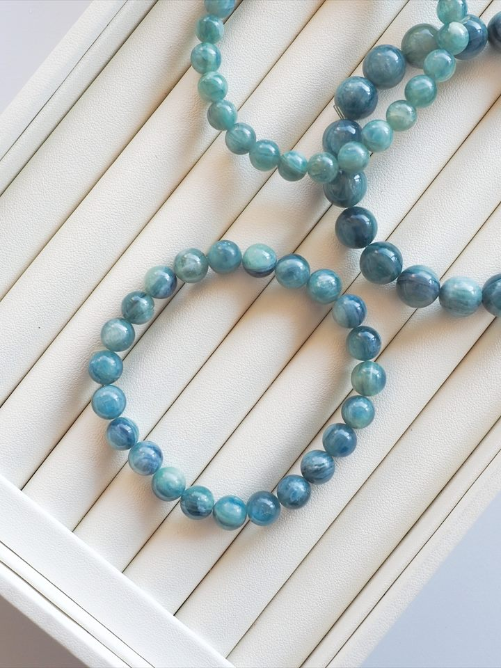
藍綠晶
10/26 新品 · 藍綠色調 · 多尺寸
看照片與款式資訊 ↗NT$330 起
6mm NT$330 · 7mm NT$400 · 8mm NT$550 · 9mm NT$630 · 10mm NT$890；手圍約 16cm（可改小）
顏色卡在藍跟綠中間，很像海水最舒服的那一段。
藍綠晶 8mm 手串介紹 →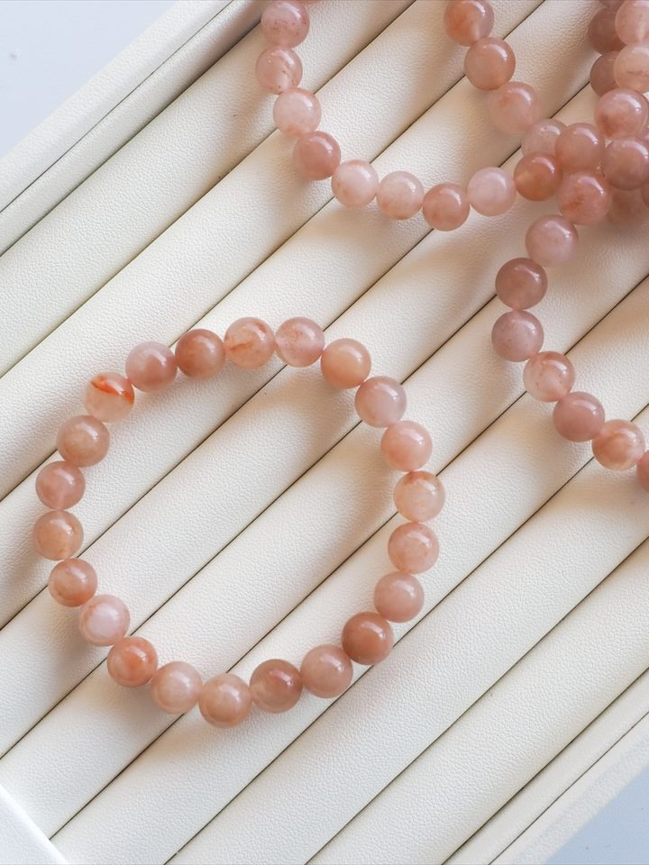
桃花釀
10/26 新品 · 柔和粉桃色
看照片與款式資訊 ↗NT$360
8mm；手圍約 16cm（可改小）
粉粉的顏色像桃子加一點奶霧，很溫柔。
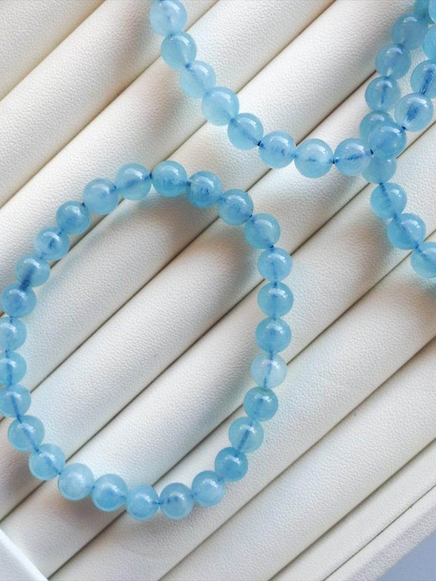
深藍海藍寶
10/26 新品 · 深藍色調
看照片與款式資訊 ↗NT$250
7mm；手圍約 16cm（可改小）
這顆藍得比較深，像天快黑前的海。
查看更多介紹 →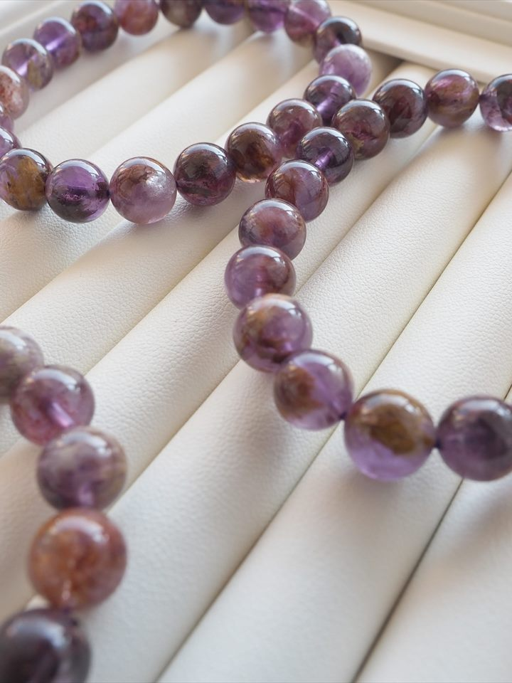
紫幽靈
10/26 新品 · 層層紫色內含物
看照片與款式資訊 ↗NT$450
10mm；手圍約 16cm（可改小）
裡面的紫色一層一層，很像水晶裡藏了一座小山。
查看更多介紹 →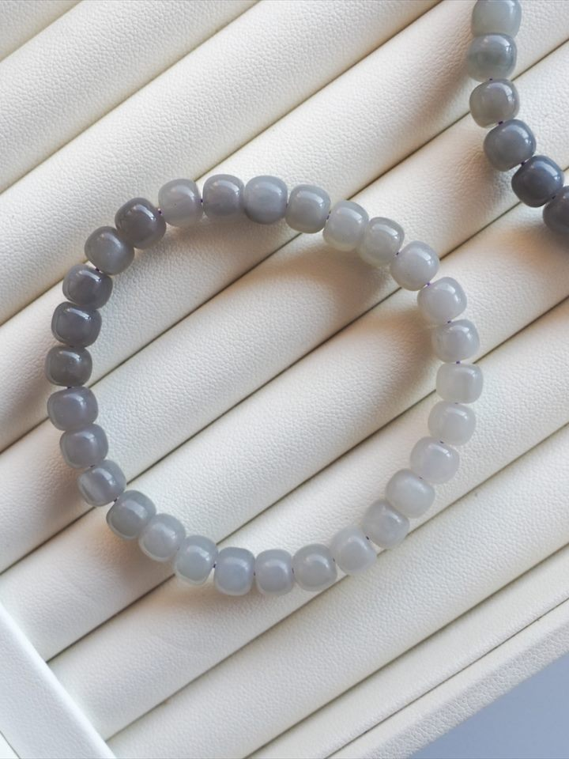
漸變煙紫和田玉
10/26 新品 · 灰紫煙紫漸變
看照片與款式資訊 ↗NT$550
7mm；手圍約 16cm（可改小）
灰紫色慢慢變深，像煙霧一層一層散開。
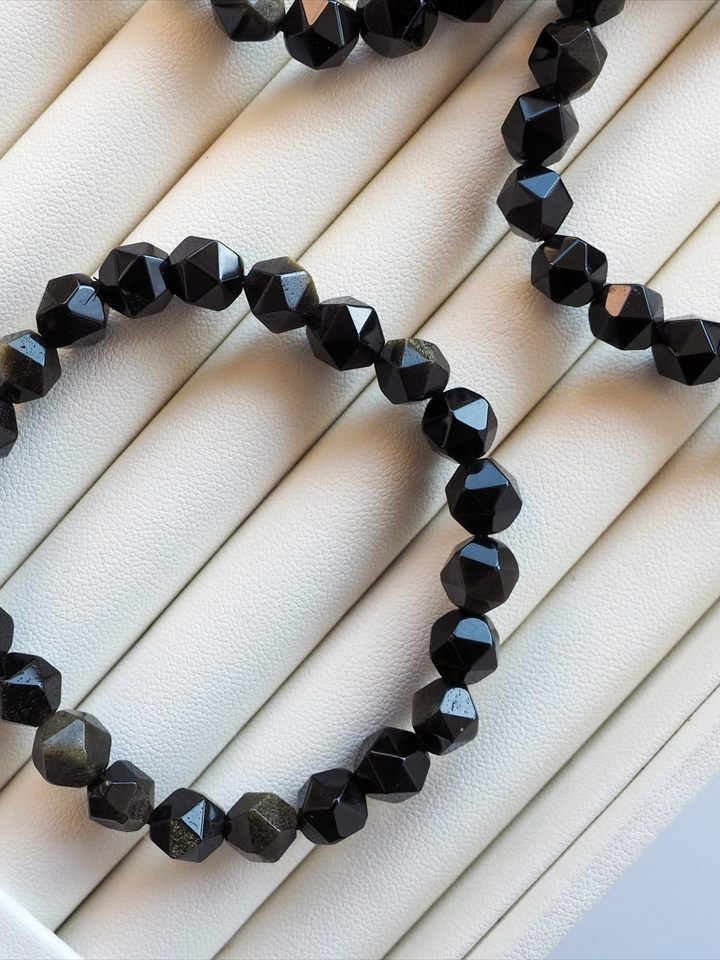
切面金曜石
10/26 新品 · 黑底金光 · 切面
看照片與款式資訊 ↗NT$300
8mm；手圍約 16cm（可改小）
黑黑的底裡會閃金光，轉一下就看得到。
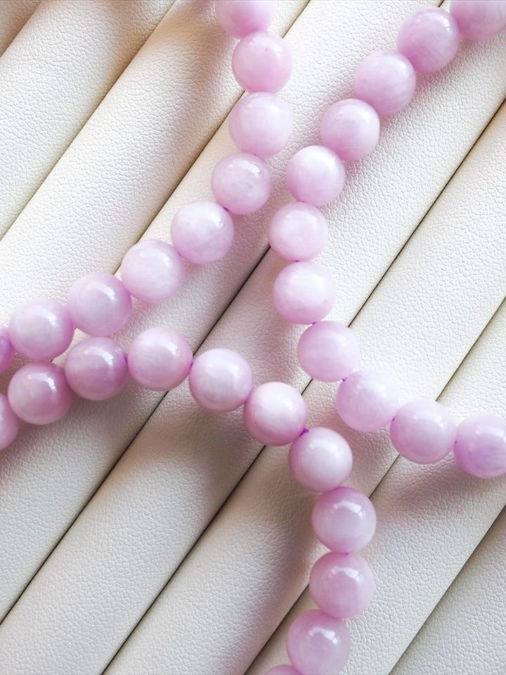
紫鋰輝
10/26 新品 · 淡紫色調
看照片與款式資訊 ↗NT$420
8mm；手圍約 16cm（可改小）
淡淡的紫色，像傍晚天空快暗下來前的顏色。
查看更多介紹 →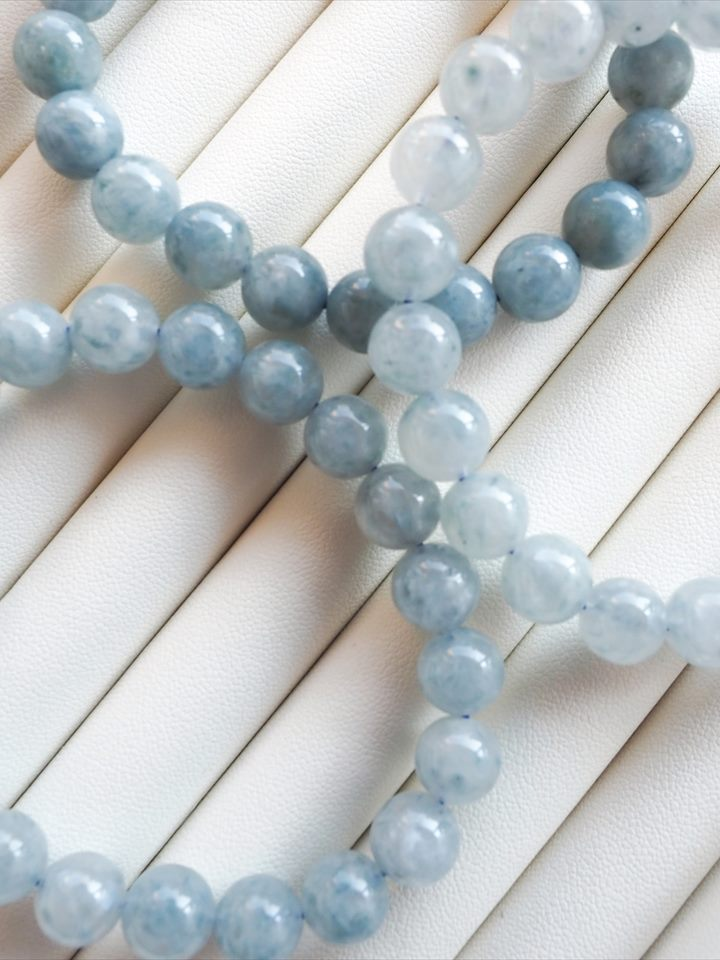
藍兔毛團團
10/26 新品 · 藍色雲霧內含物
看照片與款式資訊 ↗NT$550
9mm；手圍約 16cm（可改小）
裡面的藍色一團一團，像小雲飄在水晶裡。
查看更多介紹 →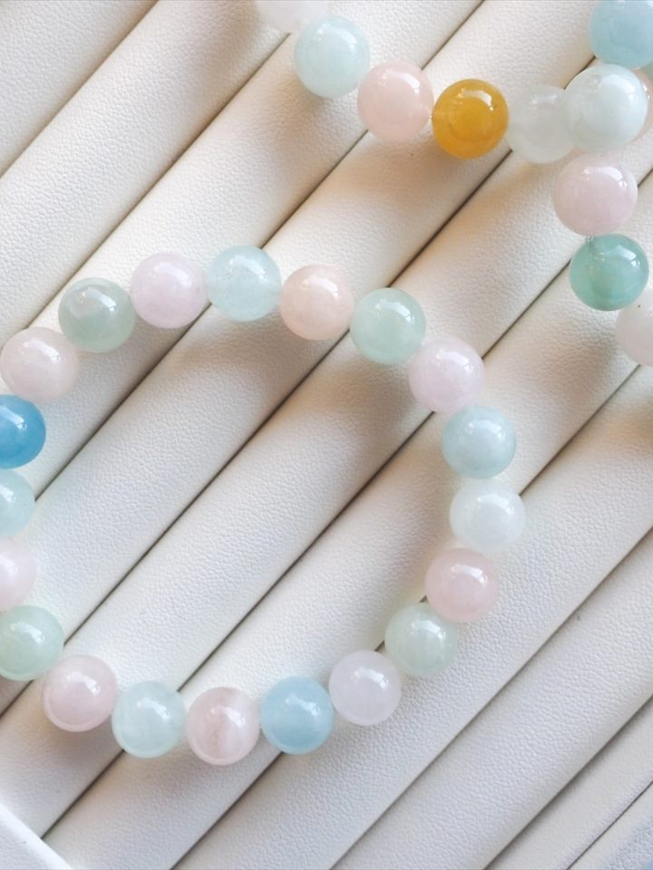
糖果摩根石
10/26 新品 · 粉嫩糖果色
看照片與款式資訊 ↗NT$400
9mm；手圍約 16cm（可改小）
像一把淡淡的糖果色，看起來甜甜的但不膩。
查看更多介紹 →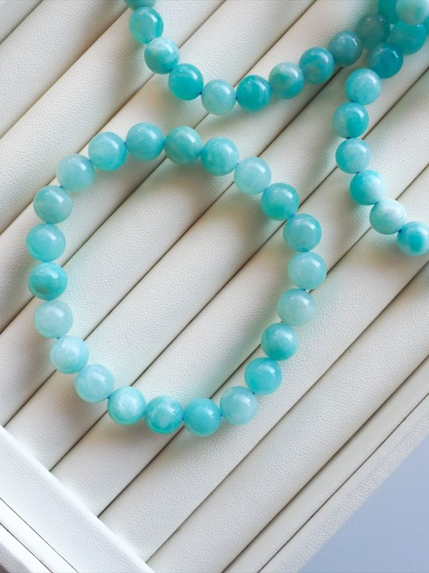
天河石
10/26 新品 · 清爽藍綠色
看照片與款式資訊 ↗NT$250
8mm；手圍約 16cm（可改小）
像晴天裡的一小塊藍綠色，戴起來很舒服。
查看更多介紹 →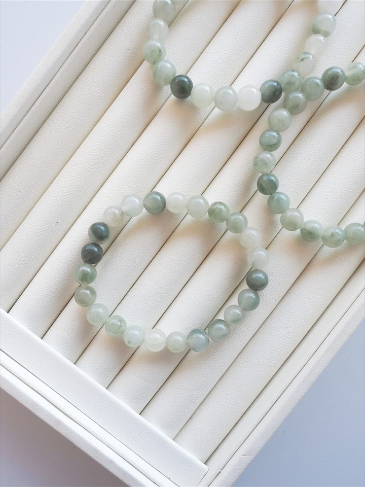
天山翠
10/26 新品 · 清透青綠色
看照片與款式資訊 ↗NT$190
8mm；手圍約 16cm（可改小）
綠綠的像山裡剛下過雨，清清爽爽的。
天山翠 8mm 手串介紹 →
漸變糖豆海藍寶
清透藍色 · 隨形珠
看照片與款式資訊 ↗NT$320 起
約 3.5～4mm+ · 手圍可調節
淡藍色像被水洗過的天空，糖豆造型與漸層排列讓清涼色調多一點俏皮。
查看更多介紹 →
漸變天河石
藍綠色系 · 日常穿搭
看照片與款式資訊 ↗NT$280 起
約 6mm · 手圍請先確認
從清淺的藍綠到較濃的綠色，常伴奶白紋路與雲霧般層次；每條的透感與色帶都不盡相同。
查看更多介紹 →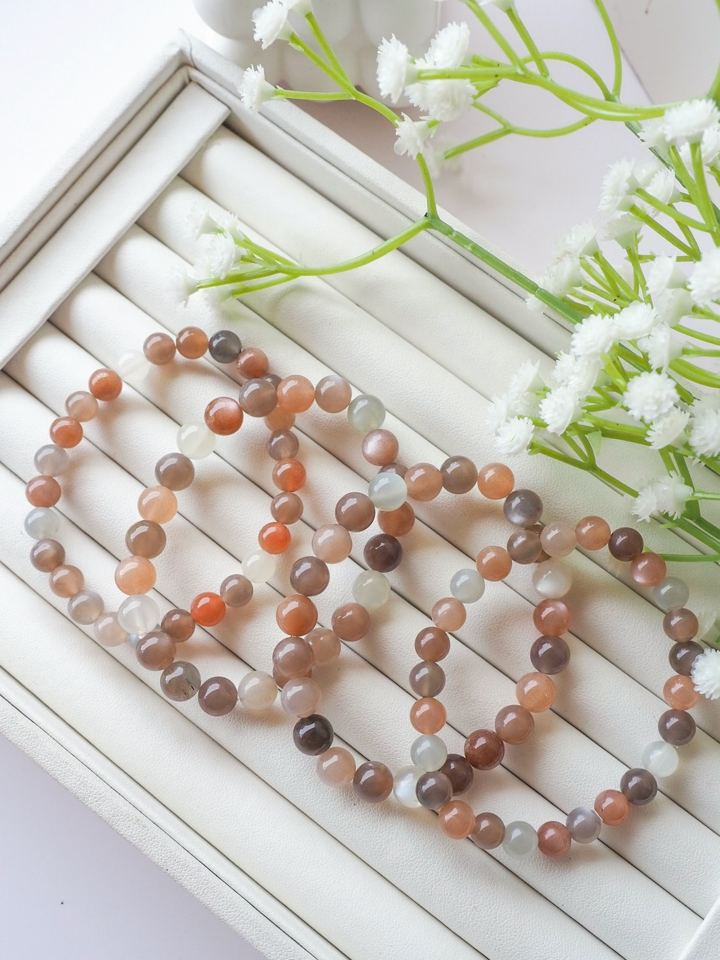
彩月光石
灰橘白色 · 柔和搭配
看照片與款式資訊 ↗NT$280 起
7mm NT$280 · 8mm NT$350 · 10mm NT$420
手圍約 16cm
灰、白底色與轉動時浮現的柔光，是月光類選物迷人的地方。
查看更多介紹 →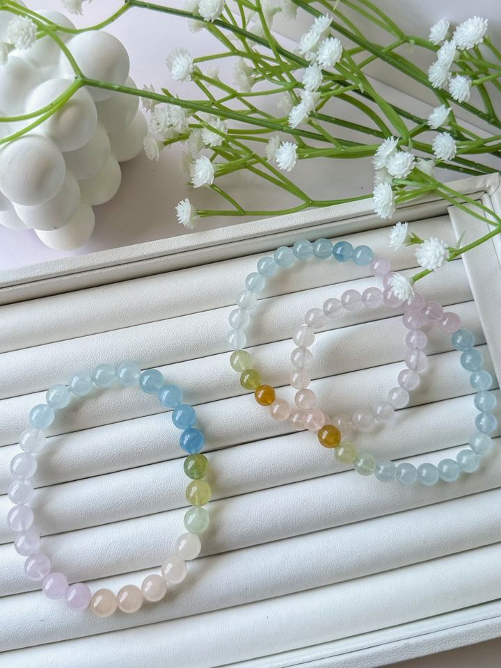
彩色摩根石
繽紛淺色 · 日常穿搭
看照片與款式資訊 ↗售價與現貨請先確認
珠徑與手圍請先確認
冰淇淋般的粉、淡藍與淺綠，帶著奶霧色與柔和透感。
查看更多介紹 →
多角切紫水晶
過往款式，現貨與現價請詢問
看照片與款式資訊 ↗過往款式，現價請詢問
8～9mm · 手圍 16cm
從淡紫到濃紫，轉動切面可看到明暗變化。
查看更多介紹 →
銅髮晶
過往款式，現貨與現價請詢問
看照片與款式資訊 ↗過往款式，現價請詢問
10mm · 手圍 17cm
銅色或暖色針絲在珠體裡交錯，角度改變時會看到不同密度的線條。
查看更多介紹 →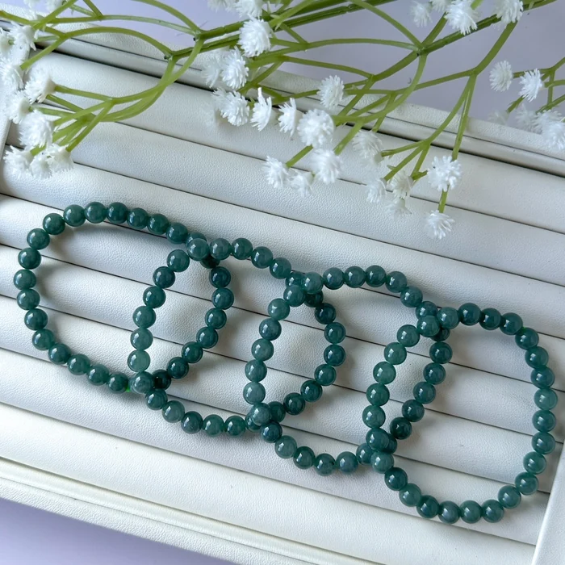
藍水翡翠
日常配戴選物
看大圖・詢問款式 ↗售價與現貨請先確認
珠徑與手圍請先確認
藍水款偏清冷，愛心與手繩則多一點日常的小趣味。
查看更多介紹 →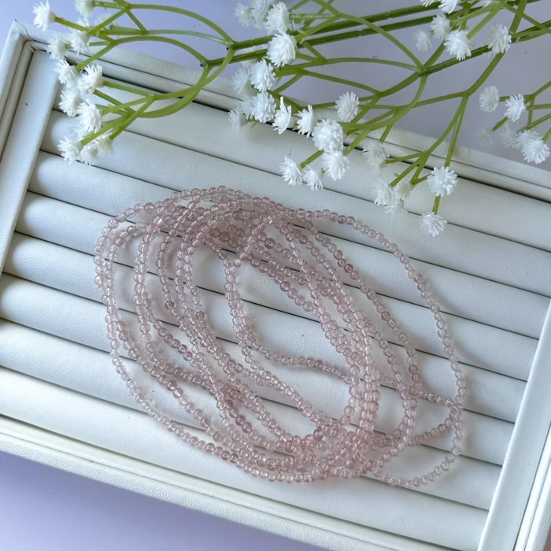
白水體草莓晶
細珠款
看大圖・詢問款式 ↗售價與現貨請先確認
珠徑與手圍請先確認
清透或帶霧感的底色裡，細小紅粉點與片狀層次像留住一點果實色彩。
查看更多介紹 →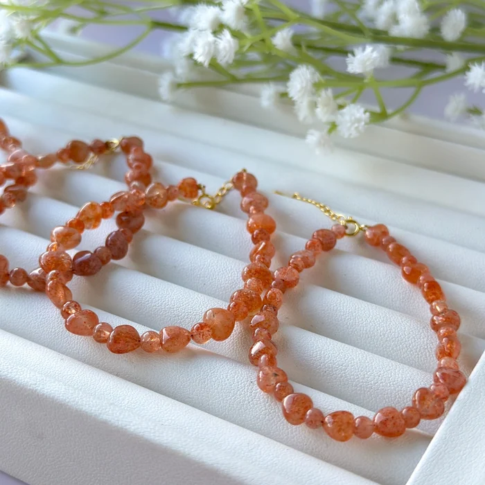
金太陽愛心
日常配戴選物
看大圖・詢問款式 ↗售價與現貨請先確認
珠徑與手圍請先確認
暖金、橘與棕色光感，像把一點日光留在手腕。
查看更多介紹 →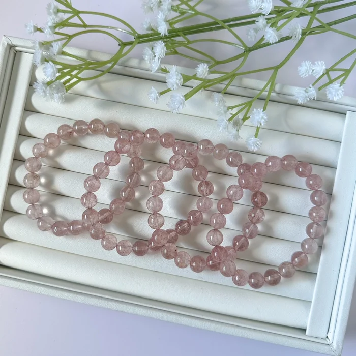
白水體草莓晶
圓珠款
看大圖・詢問款式 ↗售價與現貨請先確認
珠徑與手圍請先確認
清透或帶霧感的底色裡，細小紅粉點與片狀層次像留住一點果實色彩。
查看更多介紹 →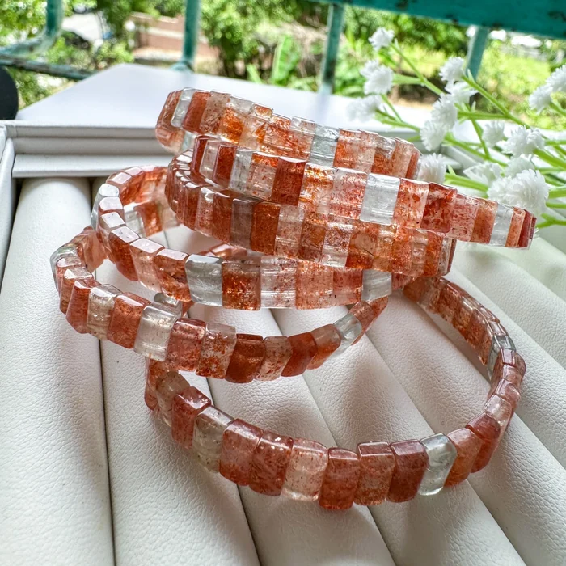
阿魯沙手排
日常配戴選物
看大圖・詢問款式 ↗售價與現貨請先確認
珠徑與手圍請先確認
排列式珠體讓色澤與紋理形成連續節奏，比圓珠多一些俐落線條。
查看更多介紹 →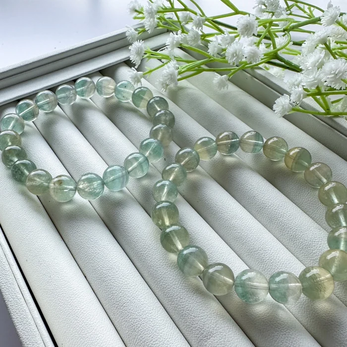
雙色螢石
日常配戴選物
看大圖・詢問款式 ↗售價與現貨請先確認
珠徑與手圍請先確認
兩種色彩在珠體中相遇，有的分界清楚，有的柔和暈開。
查看更多介紹 →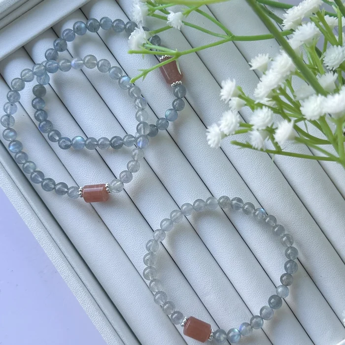
橙灰月光
日常配戴選物
看大圖・詢問款式 ↗售價與現貨請先確認
珠徑與手圍請先確認
灰、白底色與轉動時浮現的柔光，是月光類選物迷人的地方。
查看更多介紹 →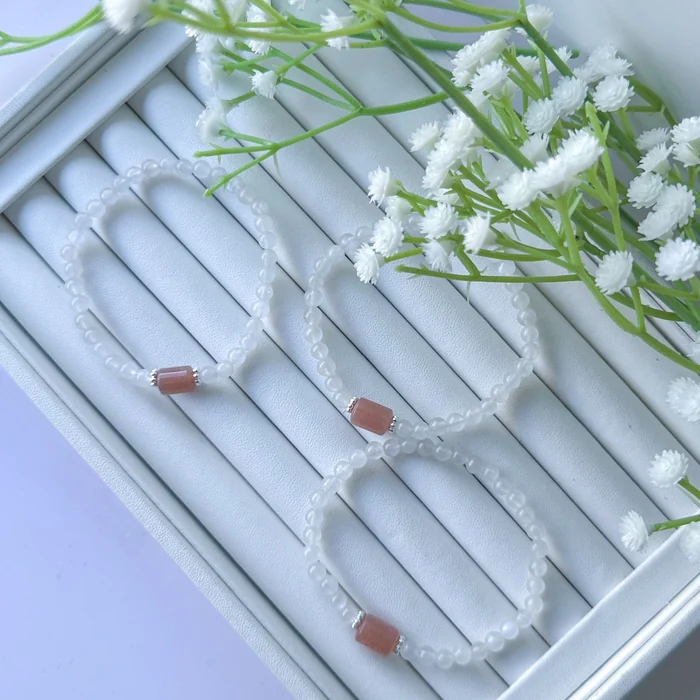
橙白月光
日常配戴選物
看大圖・詢問款式 ↗售價與現貨請先確認
珠徑與手圍請先確認
灰、白底色與轉動時浮現的柔光，是月光類選物迷人的地方。
查看更多介紹 →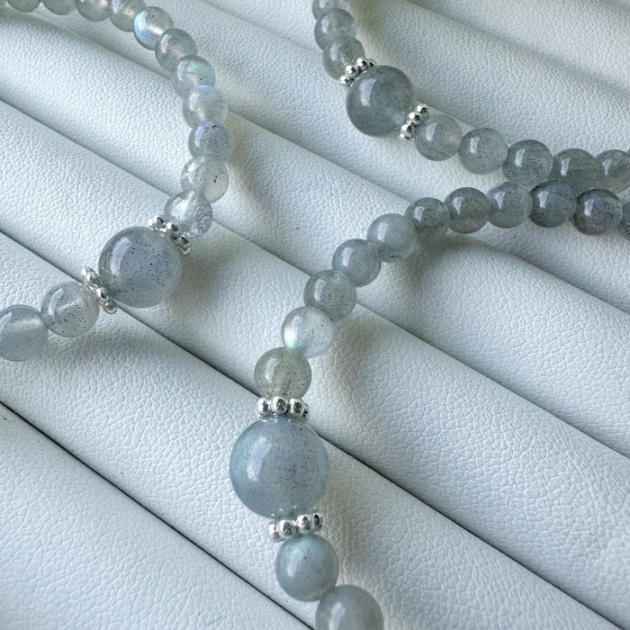
拉長石
日常配戴選物
看大圖・詢問款式 ↗售價與現貨請先確認
珠徑與手圍請先確認
安靜的灰底，在轉動時偶爾浮現不同光彩，是它很耐看的地方。
查看更多介紹 →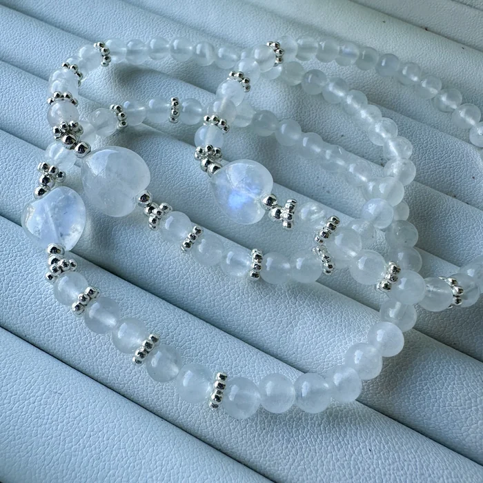
藍月光愛心
日常配戴選物
看大圖・詢問款式 ↗售價與現貨請先確認
珠徑與手圍請先確認
灰、白底色與轉動時浮現的柔光，是月光類選物迷人的地方。
查看更多介紹 →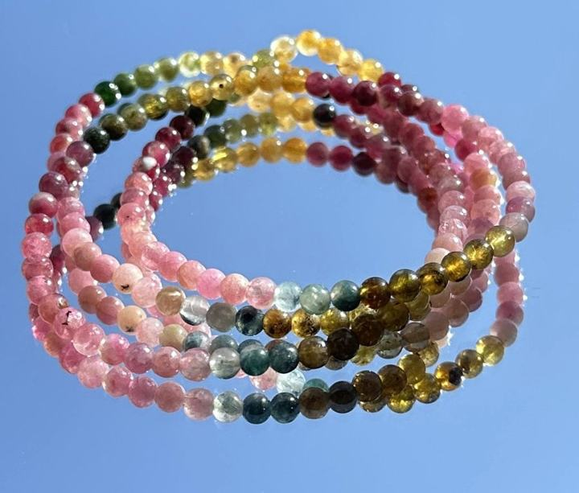
碧璽三圈
過往款式，現貨與現價請詢問
看照片與款式資訊 ↗過往款式，現價請詢問
4mm · 三圈 · 手圍 16cm
同一串裡的色彩有各自的深淺與節奏，三圈纏繞的層次適合喜歡細節的人。
查看更多介紹 →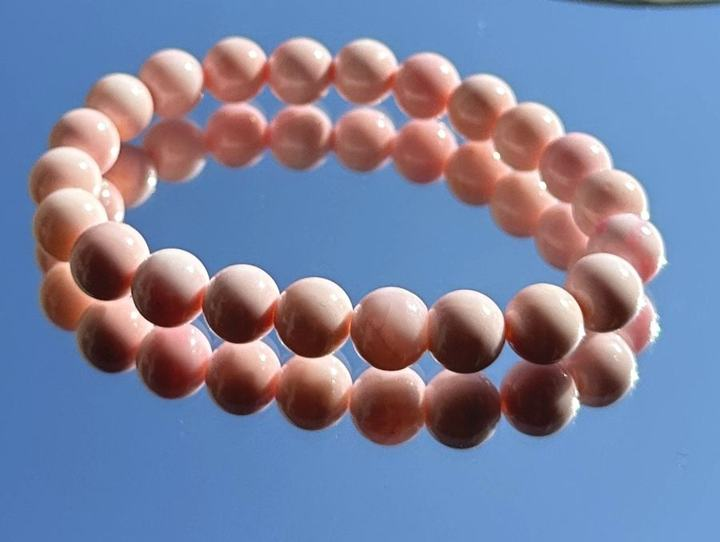
女王貝
過往款式，現貨與現價請詢問
看照片與款式資訊 ↗過往款式，現價請詢問
8mm · 附證書 · 手圍 16cm
女王貝保留現有商品名稱，柔和色澤與貝質光感是選物重點。
查看更多介紹 →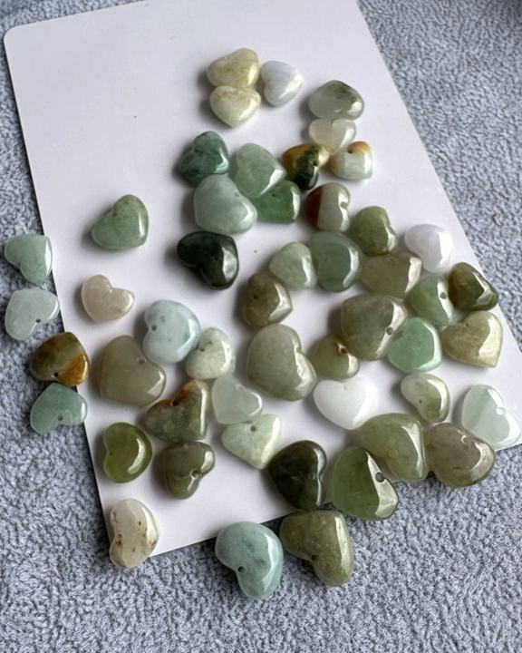
翡翠愛心
翡翠小墜 · 配件選物
看照片與款式資訊 ↗售價與現貨請先確認
珠徑與手圍請先確認
藍水款偏清冷，愛心與手繩則多一點日常的小趣味。
查看更多介紹 →
爆閃金太陽
暖橘色系 · 閃光細節
看照片與款式資訊 ↗NT$750 起
約 6／7mm · 手圍約 16cm
暖金、橘與棕色光感，像把一點日光留在手腕。
查看更多介紹 →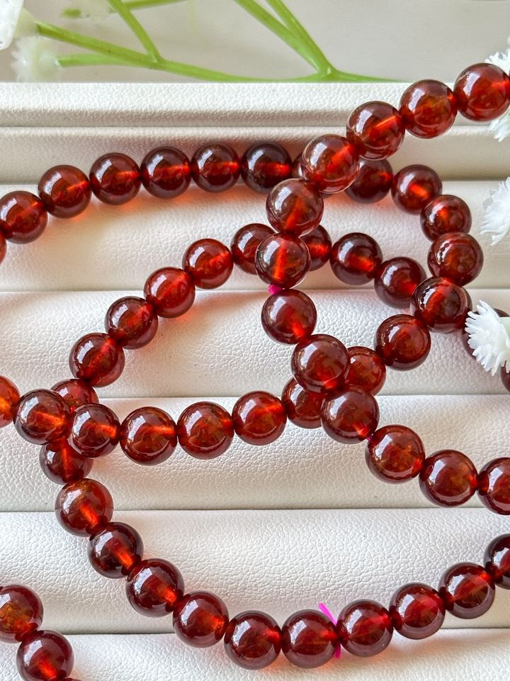
石榴石・女人之石
橘紅色系 · 穿搭亮點
看照片與款式資訊 ↗NT$450 起
約 6／7mm · 手圍約 16cm
深紅與酒紅在室內較沉穩，靠近自然光則可能看見不同深度的紅。
查看更多介紹 →
龍麟藍晶石
藍色紋理 · 看細節
看照片與款式資訊 ↗NT$490 起
約 7／8mm · 手圍請先確認
「龍麟」是款式的紋理形容，藍色深淺與自然紋路需要逐條比較。
查看更多介紹 →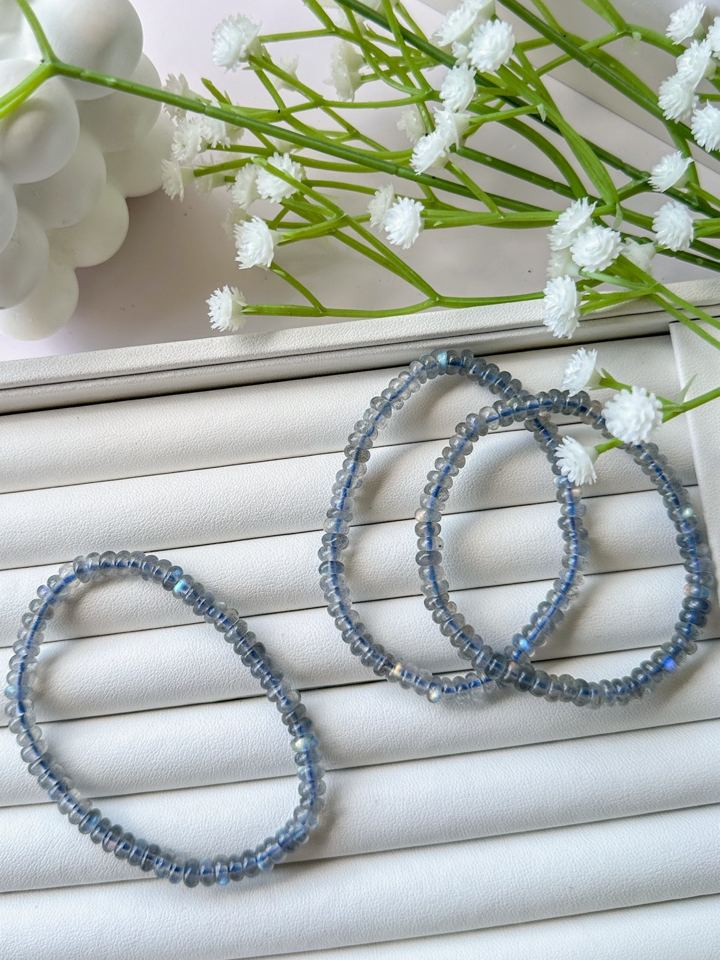
灰月光・拉長石
灰色系 · 光澤變化
看照片與款式資訊 ↗NT$450 起
約 5mm 疊珠 · 手圍約 16cm
灰、白底色與轉動時浮現的柔光，是月光類選物迷人的地方。
查看更多介紹 →
漸變綠草莓晶
綠色漸變 · 清新色系
看照片與款式資訊 ↗NT$370 起
約 8mm · 手圍約 16cm
由淺到深的綠色排列，像把一點山林的層次放在手腕。
查看更多介紹 →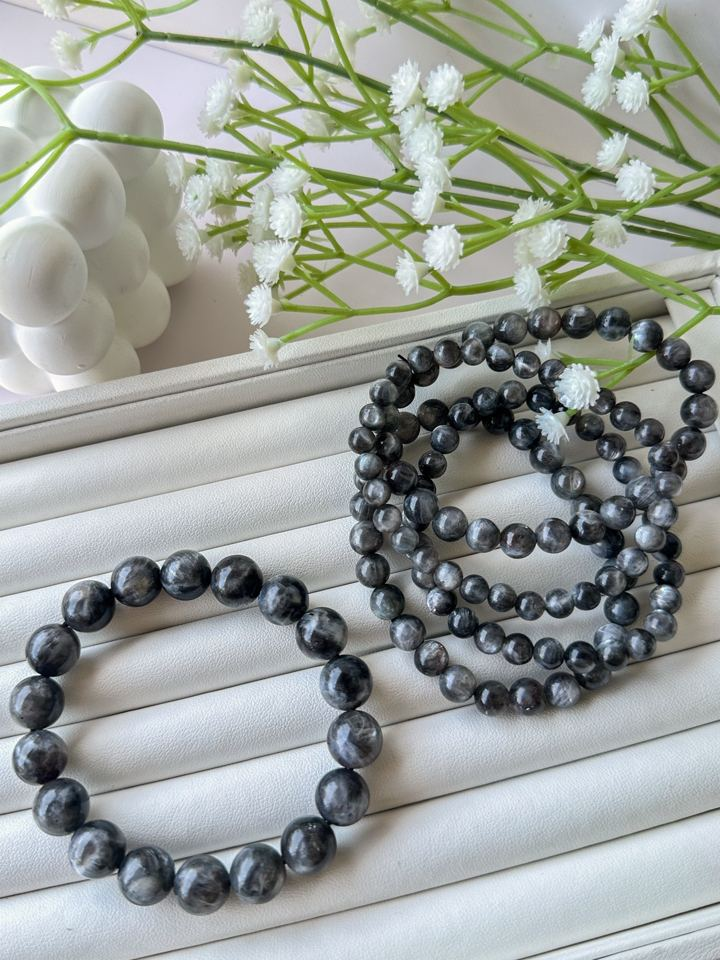
星輝骨幹
晶體內含物 · 看細節
看照片與款式資訊 ↗NT$550 起
約 6～9mm · 手圍請先確認
紫幽靈可留意紫色與內部層次的組合；星輝骨幹則可細看光線下的深淺、內含物與生長感。
查看更多介紹 →價格資料核對於 2026/10/07；彩月光石規格價格更新於 2026/10/12。照片為款式參考，實際可選規格與現貨以賣貨便商品頁為準。新品與近照在Instagram。
📷 看客人實際戴上手（3 張）
過往單品實戴與客人回覆，看看水晶在日常搭配中的樣子。照片為歷史紀錄；同款現貨與規格請確認賣場。
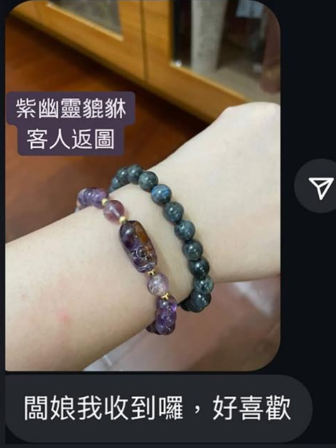
紫幽靈貔貅 · 客人實戴
實際戴上手，看看日常搭配的感覺。
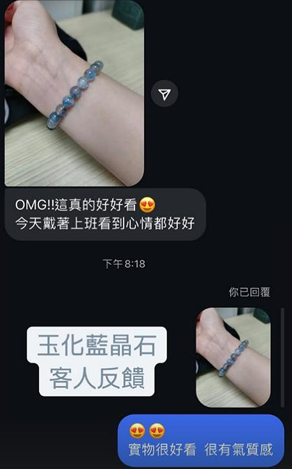
玉化藍晶石 · 客人實戴
「這真的好好看」——客人的日常實戴分享。
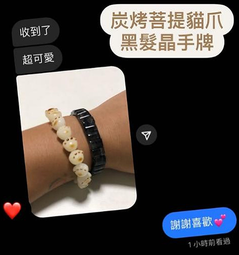
貓爪與黑髮晶 · 客人實戴
兩種不同風格，一起戴進日常。
喜歡的款式與規格，請以賣場當下資訊確認。
紫水晶、草莓晶手串怎麼挑？
喜歡紫色，可以比較紫水晶的色澤、珠徑與設計款；喜歡粉色草莓晶，可以看實拍中的內含物、珠子大小與手圍。想找綠草莓晶，也可以從綠色系挑起。
看紫色系手串 · 看粉色系手串 · 看綠色系手串 · 看礦種與尺寸挑選指南 →